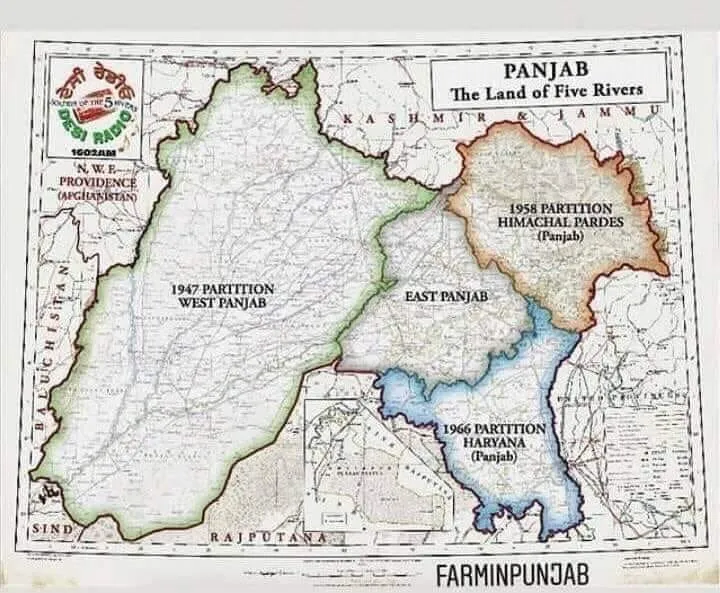
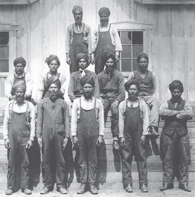
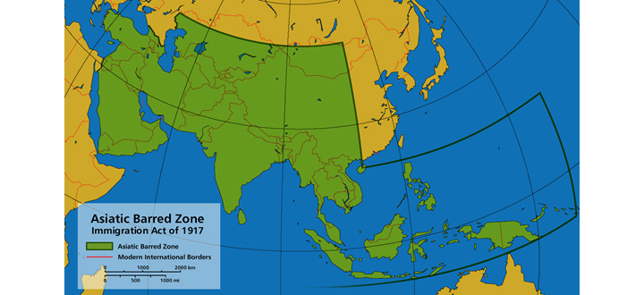
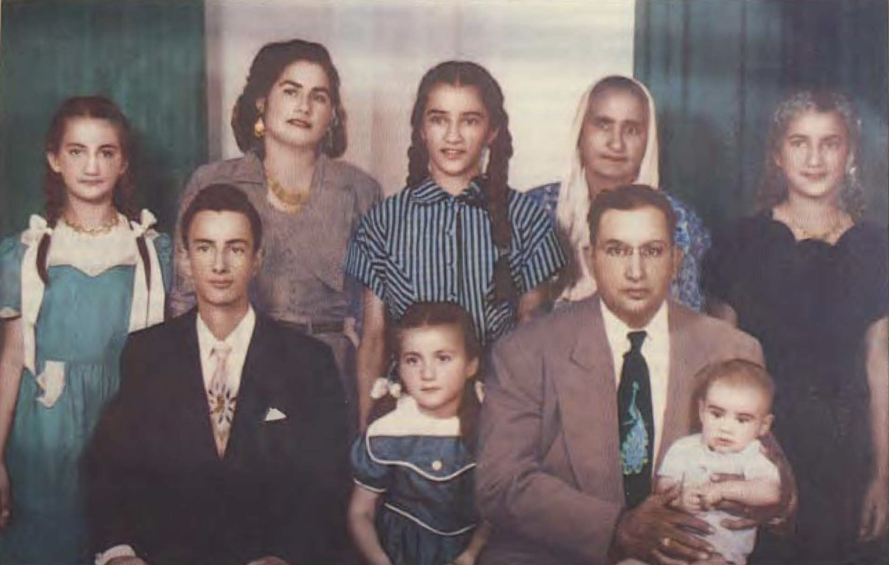
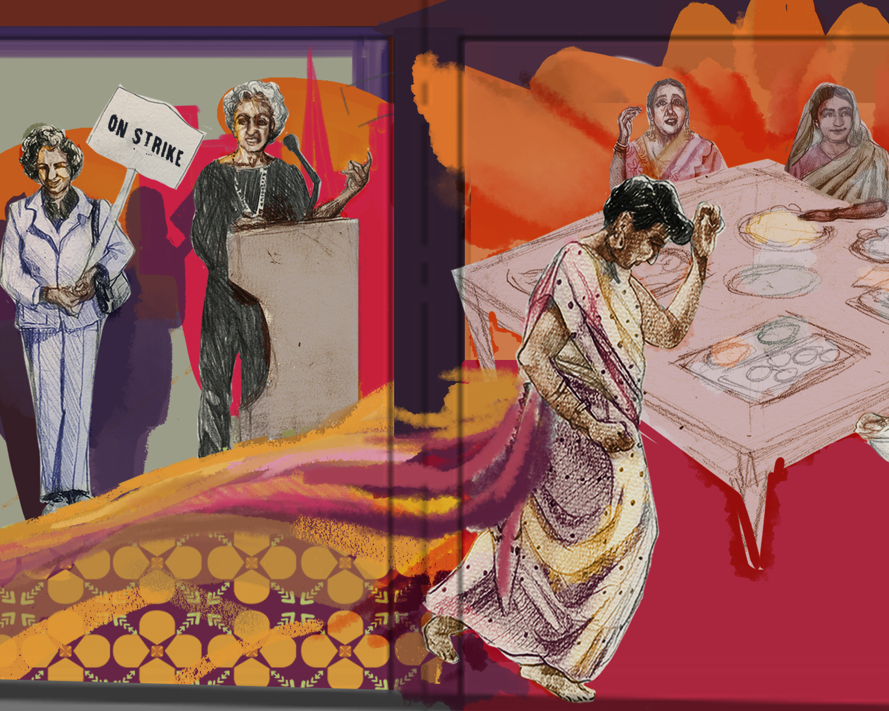
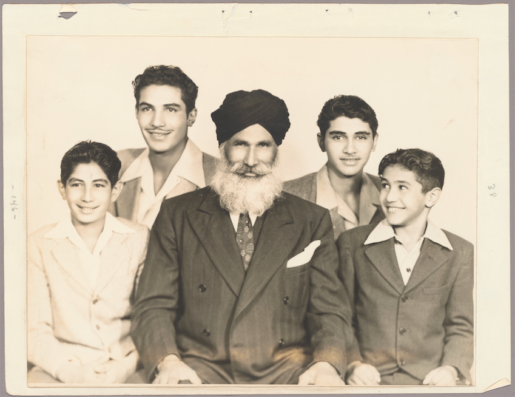
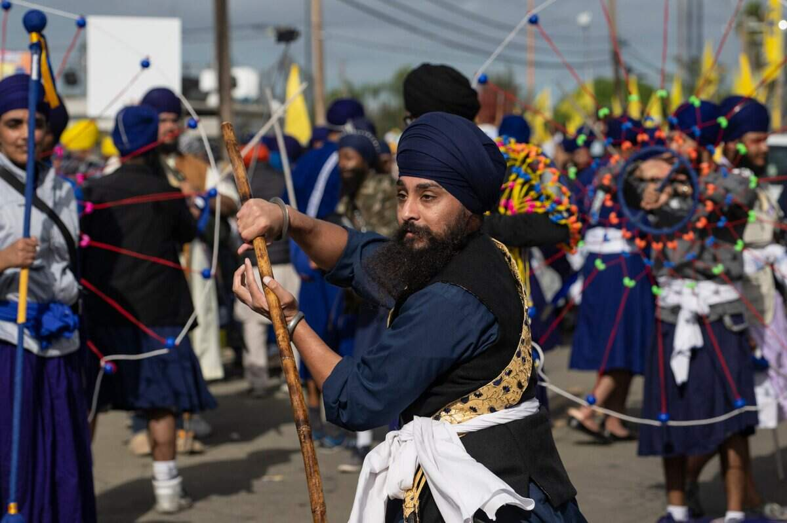

ESSENTIAL QUESTIONWhat happens when two excluded communities find each other, and what does their story tell us about who gets to belong in America?
In the early 1900s, a Punjabi Sikh farmer in California might finish a long day in the fields and come home to a house where Punjabi, Spanish, and English all mixed at the dinner table. His wife might be Mexican American and Catholic. Their children might carry names like Singh-Hernandez or Garcia-Dhaliwal.
In the early 1900s, a Punjabi Sikh farmer in California might come home after a long day in the fields. His wife might be Mexican American and Catholic. Their children might have names like Singh-Hernandez or Garcia-Dhaliwal.
This was not a tiny accident of history. It was a real California community built by people who were pushed out by law, race, and immigration rules. Their story shows that belonging is sometimes built at the kitchen table before the country is ready to recognize it.
This was not just one family. It was a real California community. These families were pushed away by unfair laws. Their story shows that belonging can begin at home before the country accepts it.
HISTORICAL CONTEXT
PUNJABI SIKH MEN COME TO CALIFORNIA

Punjab is a farming region in South Asia. Many early South Asian immigrants to California came from this region. Wikimedia Commons.
The first South Asian immigrants who came to California in large numbers arrived between about 1900 and 1917. Most were Punjabi SikhA Sikh person with roots in Punjab. men from British IndiaIndia when it was ruled by Britain.. Many first worked in lumber mills in the Pacific Northwest. Then they moved south into California's farms.
The first South Asian immigrants came to California in larger numbers from about 1900 to 1917. Most were Punjabi Sikh men from British India. Many worked in lumber mills first. Then they moved into California farm work.
These men already knew agriculture. Punjab was a fertile farming region, and many immigrants brought deep farming skills with them. In California, they worked with rice in the Sacramento Valley, cotton and dates in the Imperial Valley, and fruit in the San Joaquin Valley.
These men knew farming. Punjab was a strong farming region. They brought farming skills with them. In California, they worked with rice, cotton, dates, peaches, and apricots.

Farmworkers in California's agricultural valleys, early twentieth century. Library of Congress.
Many white Californians did not see them as future neighbors. They saw them as laborers who could be used and then kept out of full belonging. The men helped build California agriculture, but laws and racism made family life, citizenship, and land ownership difficult.
Many white Californians did not welcome them as neighbors. They saw them as workers only. Punjabi men helped build California agriculture. But laws and racism made family life, citizenship, and land ownership hard.
Real-world connection: California agriculture has always depended on workers that the law did not treat equally.
Real-world connection: California farms have often depended on workers who were treated unfairly.
DID YOU KNOW
Rice fields in California's Sacramento Valley.
Some Punjabi farmers helped make rice farming work in California because they already understood wet-field agriculture from home. That is the wild part: knowledge carried across the ocean became part of what people now think of as California farming.
EXCLUSION BY LAW
THE LAW CLOSES THE DOOR
In 1917, Congress passed the Barred Zone ActA law blocking immigration from much of Asia.. It cut off immigration from a huge area of Asia, including India. That meant Punjabi men already in California were stuck. New workers could not easily come, and many men could not bring wives or family.
In 1917, Congress passed the Barred Zone Act. It blocked immigration from much of Asia, including India. Punjabi men already in California were stuck. Many could not bring wives or family.

Map showing the Asiatic Barred Zone created by the Immigration Act of 1917. Wikimedia Commons.
Citizenship was another barrier. The old Naturalization ActA law about who can become a citizen. limited naturalized citizenship to people considered white and people of African descent. In 1923, the Supreme Court decided United States v. Bhagat Singh ThindCourt case denying citizenship to South Asians.. The Court ruled that South Asians were not white in the way most Americans used the word.
Citizenship was another barrier. The old Naturalization Act limited who could become a citizen. In 1923, the Supreme Court decided United States v. Bhagat Singh Thind. The Court said South Asians did not count as white for citizenship.
Bhagat Singh Thind in U.S. Army uniform, 1918. Wikimedia Commons / SAADA.
That ruling hurt real people. Some South Asian men had already become citizens before the decision. After the ruling, some had their citizenship taken away. Without citizenship, they could also face limits on land ownership because California had laws against many immigrants owning agricultural land.
The ruling hurt real people. Some South Asian men had already become citizens. After the decision, some lost citizenship. Without citizenship, they could also lose land rights.
Marriage law made exclusion even more personal. The Cable ActA law that could strip women's citizenship after marriage. of 1922 said an American woman could lose her citizenship if she married a man who could not become a citizen. California also had anti-miscegenationLaws banning interracial marriage. laws against some interracial marriages.
Marriage law made things even harder. The Cable Act said some American women could lose citizenship if they married men who could not become citizens. California also had anti-miscegenation laws that banned some interracial marriages.
FAST FACTS
The laws and records that shaped South Asian belonging
1917the Barred Zone Act blocked immigration from much of Asia, including India, which separated many families
1923the Supreme Court ruled that Bhagat Singh Thind could not be a citizen as a “white person” under naturalization law
400+Punjabi-Mexican families were documented by scholar Karen Leonard, showing this was a real community
1965a new immigration law ended the old quota system and opened a different chapter of South Asian immigration
SOLIDARITY AND FAMILY
THE PUNJABI-MEXICAN COMMUNITY

Punjabi-Mexican families formed in California's Imperial Valley and nearby farming communities. SAADA / archive search suggested.
Because many Punjabi men could not bring wives from India, they built families with women already in California. Many married Mexican or Mexican American women. California law banned some interracial marriages, but the law did not always clearly name South Asians and Mexicans in the same way. Families found space in that confusion.
Many Punjabi men could not bring wives from India. Some married Mexican or Mexican American women in California. California law banned some interracial marriages. But the law was not always clear about South Asians and Mexicans. Families found space in that confusion.
These families were not just legal loopholes. They were real homes. Children grew up with Punjabi fathers and Mexican mothers. Some homes blended Sikh and Catholic traditions. A turban and a rosary could belong to the same family story.
These families were not just legal tricks. They were real homes. Children had Punjabi fathers and Mexican mothers. Some homes blended Sikh and Catholic traditions. A turban and a rosary could both be part of one family.
Scholar Karen Leonard documented more than 400 Punjabi-Mexican families in the Imperial Valley between 1910 and 1950. Their names tell the story: Singh-Hernandez, Sandoval-Singh, Garcia-Dhaliwal, and many more. This was solidarityPeople supporting each other across differences. lived through marriage, farming, food, language, and children.
Scholar Karen Leonard documented more than 400 Punjabi-Mexican families in the Imperial Valley. Their names tell the story: Singh-Hernandez, Sandoval-Singh, Garcia-Dhaliwal, and more. This was solidarity lived through family, farming, food, and language.
WHAT THEY SHARED
Many Punjabi men and Mexican women knew farm labor, migration, racism, and being treated as outsiders.
WHAT THEY BUILT
They built families, farms, churches, temples, kitchens, and new California identities.
ART SPOTLIGHT

South Asian Women's History Mural — lead artist Sabina Kariat, 2024.
This community mural in Berkeley, California, honors South Asian American women whose leadership and perseverance helped build their communities across generations.
This mural does not tell the story of just one person. It brings together women from different generations, including early immigrants and later activists, to show that history is built by many people working together. Two of the women featured, Kartar Dhillon and Kala Bagai, became symbols of resilience after facing discrimination against South Asian immigrants in the United States.
PRESENT REALITY
A NEW CHAPTER AFTER 1965
The Immigration and Nationality Act of 1965 changed who could immigrate to the United States. Wikimedia Commons.
The Immigration Act of 1965 opened a new chapter. It ended the old national-origins quota system and allowed more immigration from Asia. Many South Asian immigrants who came after 1965 were students, doctors, engineers, and other skilled workers. This created a new South Asian American community that looked very different from the early farmworker community.
The Immigration Act of 1965 opened a new chapter. It allowed more people from Asia to immigrate. Many South Asian immigrants after 1965 were students, doctors, engineers, and skilled workers. This group looked different from the early farmworkers.
Today, South Asian Americans are often described through the model minorityA stereotype that hides struggle by focusing on success. idea. That stereotype says Asian Americans are successful, wealthy, and highly educated. Some South Asian families do have high incomes and college degrees, but that is not the whole story.
Today, South Asian Americans are often described with the model minority stereotype. It says Asian Americans are always successful and wealthy. Some South Asian families are wealthy and highly educated. But that is not the whole story.
South Asian America also includes working-class people, taxi drivers, farmworkers, restaurant workers, domestic workers, and undocumented immigrants. If we only tell the success story, we erase the people who still struggle. A full history has room for doctors and farmworkers, temples and churches, Punjabi and Spanish, exclusion and belonging.
South Asian America also includes working-class people, taxi drivers, farmworkers, restaurant workers, and undocumented immigrants. If we only tell the success story, we erase people who still struggle. A full history includes all of them.
PRIMARY SOURCE MOMENT
WHO COUNTS AS BELONGING?
Bhagat Singh Thind served in the U.S. Army, but the Supreme Court still denied his path to citizenship. Wikimedia Commons / SAADA.
PRIMARY SOURCE
“The words ‘free white persons’ are words of common speech, to be interpreted in accordance with the understanding of the common man. They are not words of scientific origin. The average man knows perfectly well that there are unmistakable and profound differences between the people popularly known as white and the people of India.”
United States Supreme Court, United States v. Bhagat Singh Thind, 1923
The Court did not use fairness to decide who belonged. It used the racial ideas that many Americans already accepted, then turned those ideas into citizenship law.
IN SIMPLE TERMS: The Court said South Asians could be blocked from citizenship because most white Americans did not see them as white.
THEN AND NOW
Belonging often begins where the law says it should not.
1910S-1950S

Punjabi-Mexican families created belonging across borders, religions, and laws.
NOW

South Asian American communities today include many languages, religions, jobs, and migration stories.
THEN
In the early twentieth century, Punjabi men and Mexican or Mexican American women built families while immigration and citizenship laws tried to limit them. Their homes connected languages, religions, food, farming, and family names. The historical image represents a community that made belonging before the law fully allowed it.
NOW
Today, South Asian American communities continue to build public life through cultural events, religious communities, organizing, businesses, art, and family networks. The present-day image shows community presence rather than isolation. South Asian American history is not only a story of exclusion; it is also a story of action and belonging.
CONNECTION
The connection is that communities often create belonging before governments recognize it. Punjabi-Mexican families showed that people could cross borders that laws tried to harden. South Asian Americans today continue that work by making community visible in public life.
Who should get to decide when a community belongs?